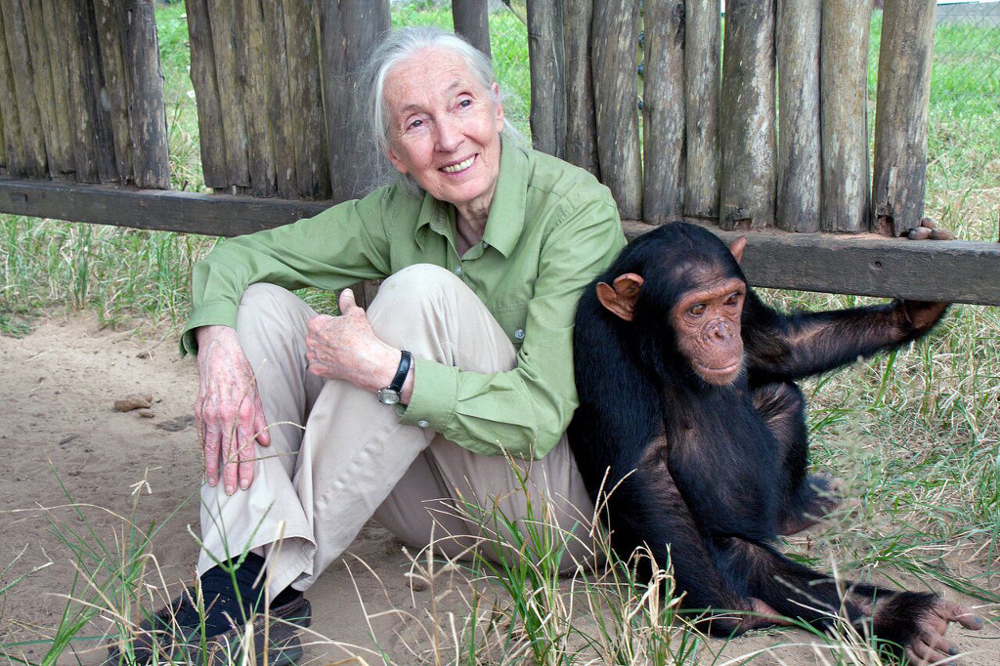

Research pioneer and protector of chimpanzees in the wild

Jane Goodall with a rescued chimpanzee at Tchimpounga Chimpanzee Rehabilitation Center in the Republic of Congo.
Here is a timeline of Jane Goodall's life
934 - Valerie Jane Morris-Goodall, known as
Jane Goodall, was born on April 3, 1934 in
London, England.
1941 - Inspired by The Story of Dr. Doolittle, she
dreamt of going to Africa to study animals one
day.
1952 - She got a job as a typist at Oxford
University. She later worked for a film studio.
1956 - An opportunity that changed her life. She
was invited by a friend to visit their family farm
in Kenya, Africa.
1957 - At age 23, Jane set foot in Africa. In Kenya
she met a famous anthropologist, Dr. Louis
Leakey, who eventually hired her to be his
secretary at the Coryndon Museum (now the
National Museum of Kenya) in Nairobi.
Recognising her talent, he decided she was the
right person to take on a study of chimps in the
Gombe Stream Reserve in Tanzania. When Jane
returned to England, Dr. Leakey began raising
funds for the project.
1960 - Jane, accompanied by her mother, set up
camp at the Gombe Stream Reserve in
Tanzania. Jane spent hours every day observing
the chimpanzees, noting down their dietary
habits and food-gathering ingenuity. In
November, her mother returned to England.
1962 - With Dr. Leakey's help, Jane was
accepted into a programme at Cambridge
University. After her first term, Jane headed
back to Africa. This time, she met Baron Hugo
van Lawick, a photographer/filmmaker from the
National Geographic magazine. She was his
assignment - he took pictures of her while she
worked.
1964 - On March 28, 1964 Jane and Hugo
wedded. They returned to Gombe to continue
researching chimps.
1967 - In March of 1967, Jane gave birth to her
son, Hugo. They nicknamed him "Grub."
1966 - She graduated from Cambridge and
became professionally known as Dr. Jane
Goodall.
1974 - Jane and Hugo divorced. This same year,
Jane observed that chimps waged war on other
groups of chimps, and even carried out
cannibalism.
1975 - Jane met Derek Bryceson, the head of
the Tanzanian National Park, and married him.
Unfortunately, soon after the wedding, Derek
died of cancer.
1977 to present - Jane
founded the Jane Goodall Institute to help people understand the
importance of preserving the forests and the
animals who lived in them. Over the years
several programs have developed to help others
realise that they, too, can make a difference in
the world around them.
Read more about the amazing Dr. Goodall on Wikipedia.